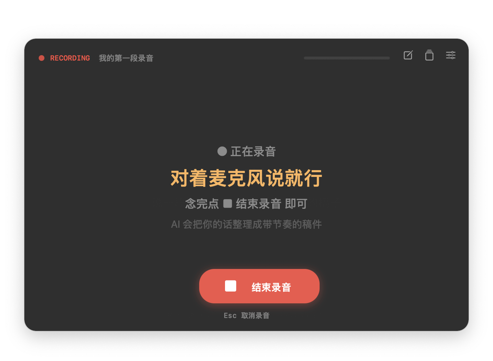
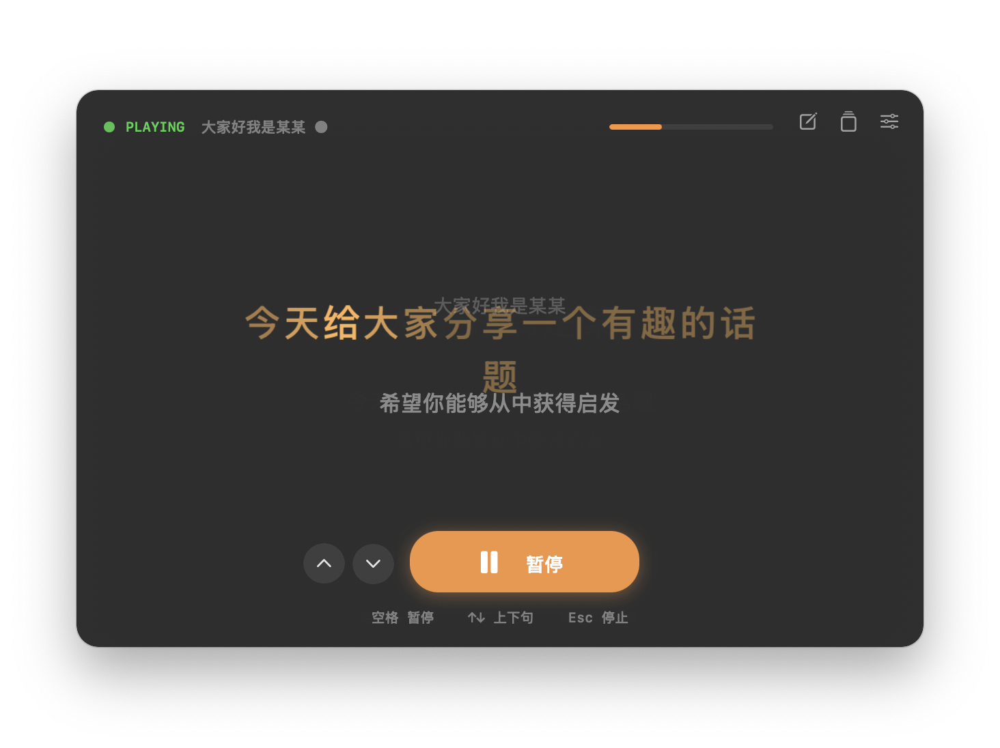

Four steps, end to end. 四步,从录到播。 4 ステップで完結。
Tap the red ● to record 点红色 ● 开始录音 赤い ● を押して録音
The window floats above your other apps. Just talk to the mic — say what you want to say in the video, in your own words, at your own pace. 窗口浮在所有 app 之上。对着麦克风,用你自己的话、自己的节奏,说你想在视频里讲的内容。 ウィンドウは他のアプリの上に浮かびます。マイクに向かって、自分の言葉、自分のペースで動画で話したいことを話します。
- 30 seconds to 2 minutes works best30 秒到 2 分钟最准30 秒〜2 分が最適
- Quiet environment recommended安静环境效果最好静かな環境推奨
Escto cancel mid-recordingEsc中途取消Escで途中キャンセル

AI builds your rhythm map AI 生成节奏映射 AI がリズム情報を生成
Stop recording. The audio goes to Volcano Engine ASR with enable_words = true. In 5–10 seconds you get a clean script plus character-level timestamps.
停止录音。音频发到火山引擎 ASR(开启 enable_words)。5–10 秒后你得到干净的稿件 + 每个字的时间戳。
録音を停止。音声を火山エンジン ASR (enable_words = true) に送信。5〜10 秒できれいな原稿と文字ごとのタイムスタンプを取得。
- Credentials bundled — zero config凭证内置 —— 零配置認証情報を内蔵 — 設定不要
- Per-character timestamps from ASR每个字独立时间戳文字ごとのタイムスタンプ
- Local-only after the response — no cloud storage响应后只存本地 —— 不上云応答後はローカルのみ — クラウド保存なし

Read take 2. We follow. 读第二遍,我们跟着你。 2 回目を読む。私たちがついていきます。
Tap ▶ Play by Rhythm. The teleprompter scrolls at the exact pace you spoke last time. Each current character subtly scales up at 1.05x — never jittery, always smooth. 点 ▶ 按节奏播放。提词器按你上次说话的节奏滚动。当前字微微放大 1.05x —— 平滑、不抖。 ▶ リズムで再生 を押す。前回話したペースで原稿がスクロール。現在の文字が 1.05 倍に拡大 — 滑らかで震えない。
- Space to pause anytime空格随时暂停Space でいつでも一時停止
- ↑↓ to skip sentences↑↓ 切换句子↑↓ で文を切替
- CATextLayer renders without layout reflowCATextLayer 渲染,无 layout 抖动CATextLayer でレイアウト変更なし

Record your video. We stay invisible. 录视频。我们隐形。 動画を録る。私たちは見えない。
Open QuickTime, OBS, ScreenFlow, or any screen recorder. Start your video. The MyPace window is right there on your screen — but it won't appear in the recording. Ever. 打开 QuickTime / OBS / ScreenFlow / 任何录屏工具,开始录视频。MyPace 窗口就在你眼前 —— 但永远不会出现在录像里。 QuickTime / OBS / ScreenFlow など任意の画面録画ソフトを開いて録画開始。MyPace ウィンドウは目の前にあるのに、録画には絶対映りません。
- Window stays always on top窗口始终置顶常に最前面
- Drag any edge to resize拖拽任意边缘可缩放任意の端をドラッグでリサイズ
- Drag the body to move拖拽窗口主体可移动本体をドラッグで移動